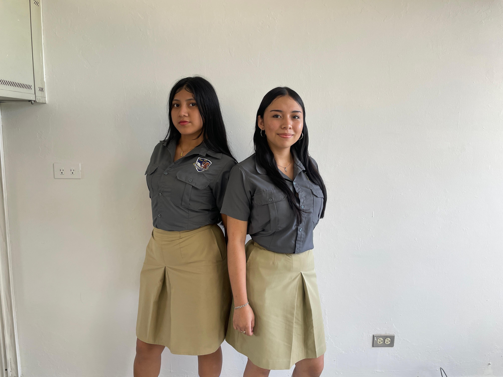

💻
Bachillerato Técnico Vocacional
Formación especializada para desarrollar habilidades técnicas y académicas vinculadas con el mundo laboral.
Fotos de la Especialidad

Especialidades Disponibles
Desarrollo de Software
Capacitación en programación, bases de datos y desarrollo web para crear soluciones tecnológicas. El aprendizaje combina fundamentos y práctica para fortalecer la capacidad de resolver problemas.
Asistente Contable
Formación en procesos financieros, gestión de libros contables, normativas tributarias y herramientas administrativas. Se desarrollan habilidades de organización, precisión y responsabilidad.